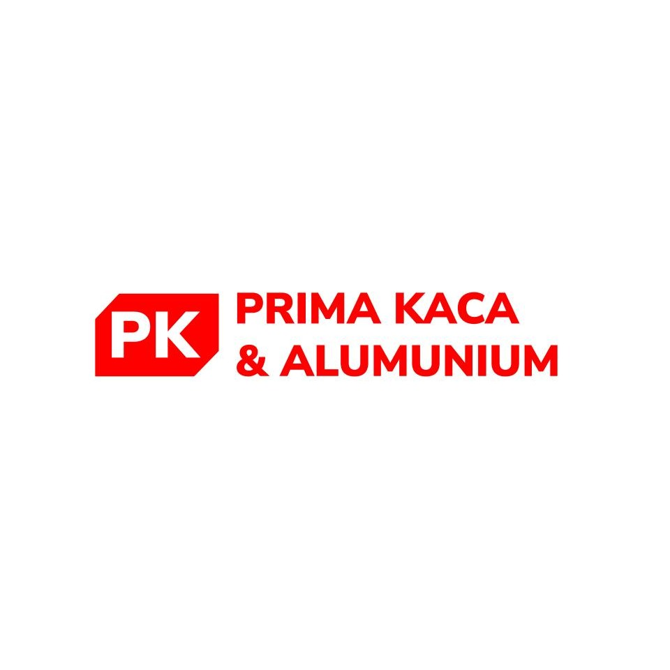

Prima Kaca & Alumunium adalah usaha keluarga yang mengerjakan jendela, pintu, kanopi, furnitur, hingga interior bermaterial kaca dan alumunium — dikerjakan tim dengan pengalaman lebih dari 10 tahun.

Prima Kaca & Alumunium berdiri sejak 2018 sebagai bisnis keluarga (family owned), namun pemilik telah menekuni bidang kaca dan alumunium lebih dari 10 tahun sebelum usaha ini resmi dibuka.
Kami mengerjakan hampir semua permintaan desain, selama material utamanya kaca atau alumunium — mulai dari jendela dan pintu, kanopi, furnitur custom, hingga elemen interior lainnya.
Kini kami hadir dengan 2 toko di Kuningan dan Majalengka, melayani proyek berskala perumahan sebagai fokus utama, serta beberapa proyek komersial.
Selengkapnya tentang kami →“Setiap potongan kaca dan alumunium yang kami pasang, kami perlakukan seperti untuk rumah kami sendiri.”
Setiap layanan dikerjakan sesuai ukuran, model, dan desain yang diminta.
Jendela alumunium berbagai model, dari minimalis hingga sliding besar.
Pintu kaca dan alumunium untuk rumah, kantor, dan area usaha.
Kanopi kaca & alumunium untuk carport, teras, dan area outdoor.
Lemari, meja, dan furnitur custom bermaterial kaca-alumunium.
Partisi ruangan & sekat kaca untuk sentuhan interior modern.
Bukan sekadar pasang, tapi dikerjakan dengan standar dan komunikasi yang jelas dari awal hingga selesai.
Owner dan tim kami menguasai teknik pemotongan, perakitan, dan pemasangan kaca-alumunium sesuai standar, sehingga risiko kebocoran, kaca pecah, atau kusen tidak presisi bisa diminimalkan sejak awal.
Kami memilih profil alumunium dan jenis kaca (bening, rayband, atau tempered) sesuai kebutuhan proyek — bukan asal murah — supaya hasil pemasangan tahan lama dan tidak mudah bermasalah.
Ukuran, model, dan warna disesuaikan dengan kondisi bangunan Anda, cocok untuk rumah, ruko, maupun kantor dengan bentuk atau ukuran bukaan yang tidak standar sekalipun.
Anda mendapat penjelasan rincian biaya sebelum pengerjaan dimulai, tanpa biaya tersembunyi, lewat konsultasi gratis via WhatsApp maupun kunjungan langsung ke toko kami.
Mayoritas proyek kami melayani skala rumah tinggal.
Ruko, kantor, hingga area usaha lainnya.
Menyesuaikan permintaan, selama material utamanya kaca/alumunium.
Prima Kaca & Alumunium melayani pemasangan jendela, pintu, kanopi, furnitur, dan interior kaca-alumunium di wilayah Kuningan, Majalengka, dan sekitarnya. Untuk lokasi di luar area tersebut, silakan hubungi kami terlebih dahulu untuk mengecek jangkauan layanan.
Jl. RE. Martadinata No. 16, Sindangagung, Kec. Sindangagung, Kab. Kuningan, Jawa Barat 45573
Buka Senin–Sabtu, 08.00–17.00
Lihat rute →Depan Simpang, Jl. Raya Cikijing–Ciamis, Cimanggugirang, Kec. Panjalu, Kab. Majalengka, Jawa Barat 45467
Buka Senin–Sabtu, 08.00–17.00
Lihat rute →Kami melayani pemasangan jendela, pintu, kanopi, furnitur, dan interior yang bermaterial utama kaca atau alumunium, untuk kebutuhan rumah tinggal maupun bangunan komersial.
Bisa. Ukuran, model, warna profil alumunium, hingga jenis kaca dapat disesuaikan dengan kebutuhan dan gaya bangunan Anda.
Untuk area di luar kedua kabupaten tersebut, silakan hubungi kami terlebih dahulu untuk mengecek apakah lokasi Anda dapat kami jangkau.